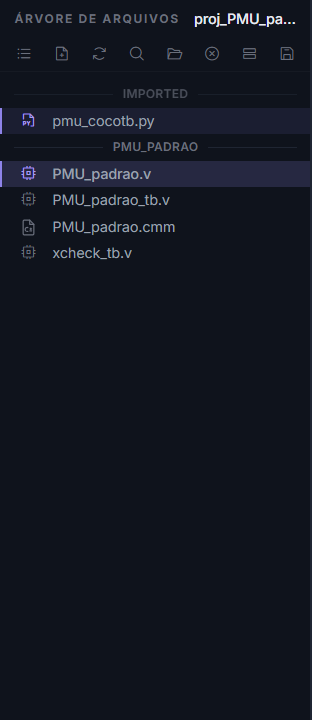
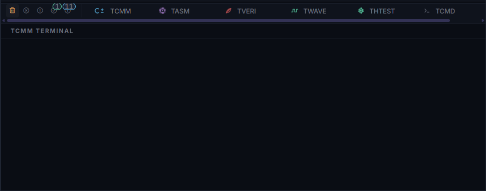

Interface principal¶
Esta página apresenta as áreas da janela principal e explica como o estado do projeto controla as ações disponíveis. A captura principal mostra a janela inteira da AURORA; as capturas detalhadas usam projetos adequados a cada recurso.

A janela principal reúne a barra superior, a árvore do projeto, o editor, os terminais e a barra de status.¶
Áreas da janela¶
Área |
Uso principal |
|---|---|
Barra superior |
Criar projetos, compilar, simular, abrir o PRISM, usar IA e acessar configurações. |
Árvore lateral |
Abrir arquivos, alternar visualizações e definir Top Level ou Testbench Top. |
Editor |
Editar C±, Assembly, Verilog, Python e arquivos auxiliares. |
Terminais |
Acompanhar mensagens de compilação, simulação e teste de hardware. |
Barra de status |
Conferir processador ativo, Top Level, Testbench Top e simulador. |
O fluxo normal começa na árvore ou no editor, continua por um botão da barra superior e produz mensagens nos terminais. Antes de executar uma ação, confira a barra de status para evitar compilar ou simular o arquivo errado.
Botões principais¶

A barra superior agrupa ações de projeto, processador, Verilog, simulação, controle de versão, configurações e Aurora Intelligence.¶
Controle em português |
O que faz |
Quando fica disponível |
|---|---|---|
Novo Projeto |
Cria um projeto. |
Sempre que nenhum diálogo impedir a ação. |
Abrir Projeto |
Abre um arquivo |
Sempre que nenhum diálogo impedir a ação. |
Hub de Processadores |
Cria um processador SAPHO. |
Com um projeto aberto. |
Compilar C± |
Gera o hardware do processador ativo. |
Com um arquivo |
Configurações de simulação do processador |
Ajusta frequência, quantidade de ciclos e exibição de arrays. |
Com um processador ativo. |
Compilar Verilog |
Valida o conjunto Verilog e atualiza a hierarquia. |
Com Top Level definido. |
Analisar Verilog (forma de onda) |
Executa a simulação, gera VCD ou FST e abre o viewer selecionado. |
Com Testbench Top definido. |
Execução rápida |
Simula sem abrir formas de onda. |
Com testbench |
Abrir PRISM |
Abre a visualização RTL. |
Com Top Level definido. |
Teste do processador sintetizado |
Executa o processador ativo com Verilator e mostra o resultado no THTEST. |
Com um processador ativo e hardware gerado. |
Configuração de Ondas |
Seleciona os sinais gravados na forma de onda. |
Com um projeto aberto. |
Cancelar |
Interrompe a execução atual. |
Durante compilação ou simulação. |
Árvore lateral¶
Um clique em um arquivo o abre no editor como uma aba de visualização. Um clique duplo mantém essa aba aberta de forma permanente. Nas pastas, um clique expande ou recolhe o conteúdo.
Na visualização Arquivos, clique com o botão direito do mouse em um arquivo para abrir o menu de contexto. Conforme o tipo e a classificação do arquivo, o menu permite Definir como Top Level, Marcar como Testbench ou Excluir arquivo. Arquivos Verilog sintetizáveis oferecem a seleção de Top Level; testbenches Verilog ou Python oferecem a seleção de Testbench Top.
A barra de ferramentas da árvore também permite criar arquivos, atualizar a lista, pesquisar, abrir a pasta no Explorer, fazer backup e fechar o projeto.
Visualizações da árvore¶
Visualização |
Uso |
|---|---|
Arquivos |
Mostra fontes sintetizáveis, testbenches e arquivos associados ao fluxo HDL registrado no |
Hierarquia |
Mostra a árvore de módulos gerada para o Top Level após a validação Verilog. |
Pastas |
Espelha a estrutura real de pastas e arquivos do projeto no disco. |
Clique no primeiro botão da barra da árvore para alternar entre as visualizações disponíveis.
{kind=link}

Arquivos reúne as fontes e os testbenches registrados no projeto.¶

Hierarquia apresenta PMU_padrao e os módulos elaborados a partir dele.¶

Pastas apresenta a organização real do projeto no disco.¶
A visualização Pastas carrega diretórios sob demanda e memoriza as pastas abertas. O arquivo .inv, quando existe na raiz do projeto, filtra somente essa visualização. Ele não altera o Git nem remove arquivos do disco.
Quando o projeto está em um repositório Git, Arquivos e Pastas podem exibir indicadores de arquivos modificados, adicionados, removidos, renomeados, copiados, novos ou em conflito. Para operações de Git, veja Source Control e Git.
Terminais¶
{kind=link}

Cada ação direciona a saída para o terminal correspondente. Na captura, o TCMM está selecionado; o TCMD permanece visível apenas como uma das abas disponíveis.¶
Os terminais são separados por etapa:
C±: Mostra a tradução do algoritmo C±.
ASM: Mostra a geração intermediária e a criação do hardware.
Verilog: Mostra validação, elaboração, hierarquia, Icarus Verilog e Verilator.
Wave: Mostra a execução dos testbenches e a preparação das formas de onda.
THTEST: Mostra o teste de hardware do processador sintetizado.
TCMD: Oferece um terminal PowerShell interativo dentro da AURORA.
O terminal THTEST é usado pelo botão Teste do processador sintetizado. A AURORA identifica as portas do processador ativo, gera um harness C++, compila o conjunto com Verilator e executa até o limite de ciclos configurado ou até o sinal cheguei indicar que o algoritmo alcançou #TOAQUI. Durante a execução, o terminal mostra o progresso, o número de ciclos e a quantidade de leituras de entrada. Ao terminar, apresenta as saídas e um link para abrir a pasta Simulation na visualização Pastas.
O terminal TCMD inicia uma sessão PowerShell real sob demanda. Ele abre no diretório do projeto e acompanha o contexto do projeto ou processador ativo. Use-o para consultar arquivos, executar comandos e trabalhar com ferramentas de linha de comando sem sair da AURORA. A ação Abrir no terminal integrado também seleciona o TCMD e muda a sessão para a pasta escolhida. Os comandos são executados com as permissões do usuário; confira o diretório exibido no prompt antes de alterar ou remover arquivos.
Use os filtros dos terminais para localizar erros e avisos. Comece pela primeira mensagem de erro, pois as mensagens seguintes frequentemente descrevem apenas consequências.
Barra de status¶

A barra de status resume as seleções usadas na próxima compilação ou simulação.¶
Consulte a barra de status antes de compilar, simular ou abrir o PRISM. Ela mostra o processador ativo, o Top Level, o Testbench Top e o simulador. Se um valor não corresponder ao fluxo pretendido, abra o arquivo correto ou ajuste a seleção na árvore antes de continuar.
Quando um botão estiver desabilitado¶
Verifique nesta ordem:
Há um projeto aberto.
O arquivo correto está aberto no editor.
O processador ativo corresponde ao algoritmo C± desejado.
O Top Level foi definido.
O Testbench Top foi definido.
Nenhuma execução incompatível está em andamento.
Na maioria dos casos, um botão desabilitado indica que falta uma dessas seleções. Salve o arquivo ativo e aguarde a conclusão de qualquer operação anterior antes de tentar novamente.